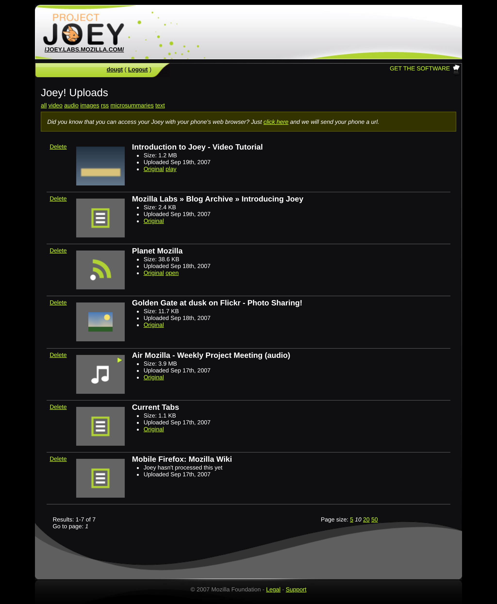
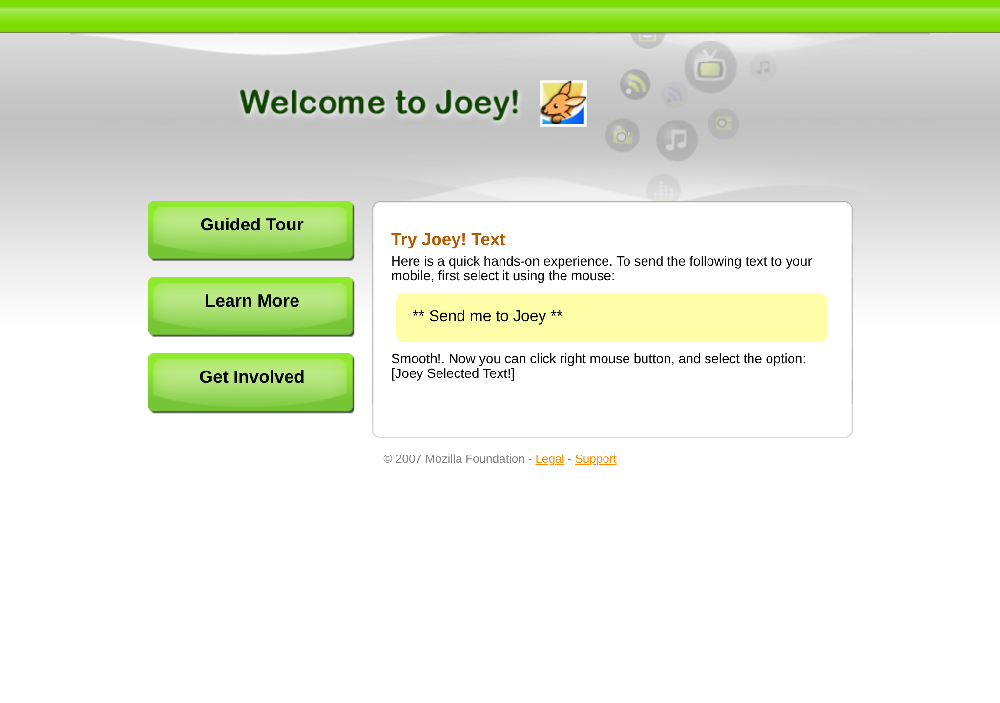
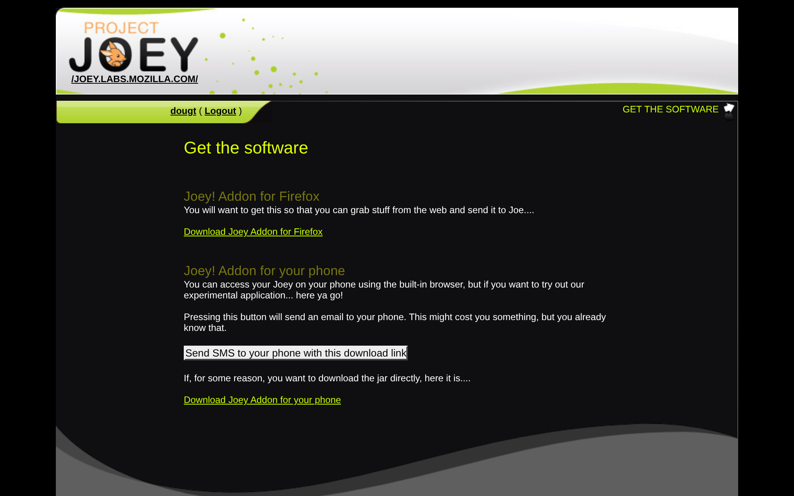
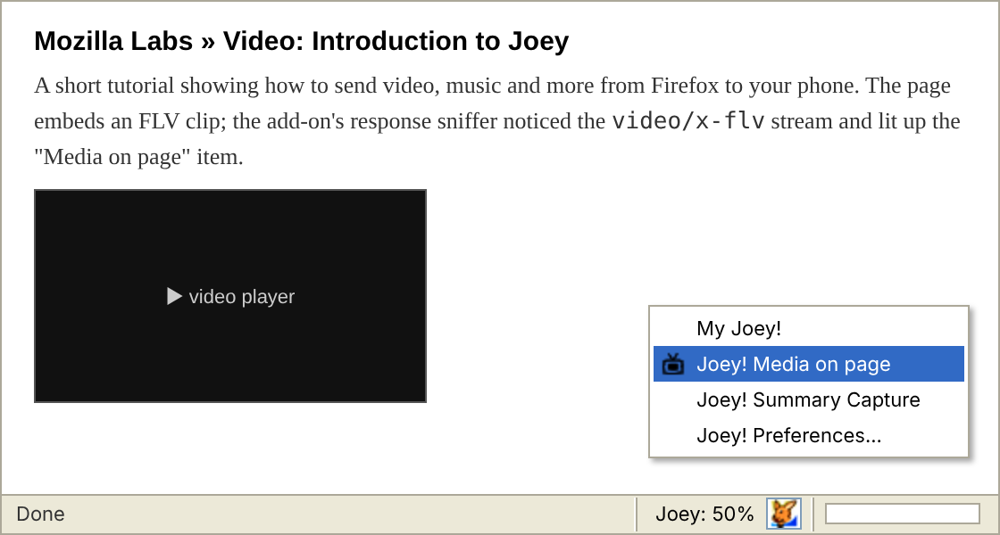
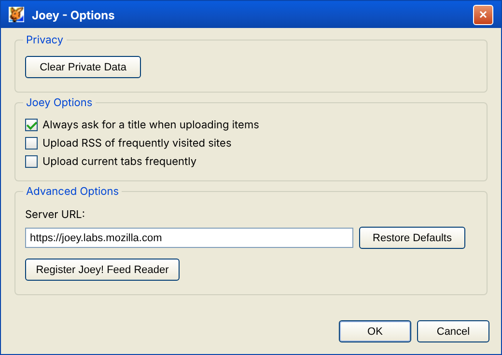

Gallery
Screenshots, regenerated from source
No screenshots were preserved with the code and the service went offline in 2008. Every image below was produced for this site from what the repository contains. They are reconstructions. Read the method notes before treating any detail as a record of the live product.
Three levels of fidelity. The web pages are the most faithful: they use the original templates, stylesheets and image files, with only the PHP replaced by static sample data. The Firefox add-on images are mock-ups of XUL dialogs drawn in HTML from the XUL, CSS and string files. The phone images are mock-ups built from the MIDlet's views, its string table and its J2ME Polish theme. The page sources for all of them are in www/recreations/.
The web site (joey.labs.mozilla.com)
Rendered from server/app/views and server/app/webroot/css in a current Chromium at 1024 pixels wide. Differences from Firefox 2 in 2007: the rounded corners written as -moz-border-radius do not apply, default fonts differ, and the Flash players for FLV and MP3 are shown as their static fallbacks.

users/login.thtml, default layout, green theme.
uploads/index.thtml.users/register.thtml.
version/index.thtml, joeyclient layout.
users/get_software.thtml.
uploads/iphone_index.thtml.
uploads/mp_index.thtml.The Firefox add-on
Firefox 2's chrome cannot be run here, so these are HTML drawings of the XUL in addons/ff/chrome/content/joey. Menu labels, dialog text, checkbox labels and status strings are copied from joey.dtd and joey.properties; icons are the original PNGs from the add-on's skin. Window decoration is generic.



joeyStatus.js.

joeyOptions.xul.
about.xul.The Java ME phone client
Mock-ups of the MIDlet's screens drawn at 240×320 inside a generic candy-bar phone frame. Colours and shapes follow clients/j2me/resources/polish.css (black background, white text, the Joey green #B5D623 for focus and titles); strings are from messages.txt; icons are the originals from resources/images. A real device would render them through J2ME Polish's own widgets, so spacing and fonts would differ by handset.


How to regenerate them
The reconstruction pages and the two Playwright scripts live in www/recreations/. With Node and Playwright's Chromium available:
cd www/recreations
node shoot-web.js # web site pages → ../img/screenshots/web-*.png
node shoot-clients.js # add-on and phone → ../img/screenshots/ff-*.png, j2me-*.pngIf you have a real capture of Joey from 2007, it belongs here instead of these. The reconstructions are honest about what the code says but cannot show what the service looked like with real data, real phones, or the bugs of the day.